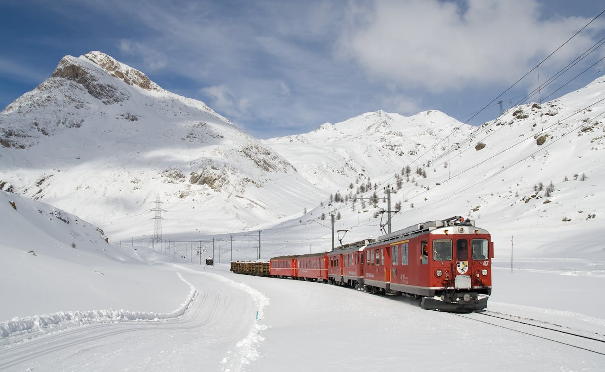
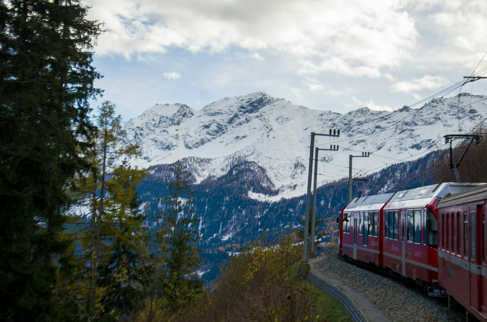
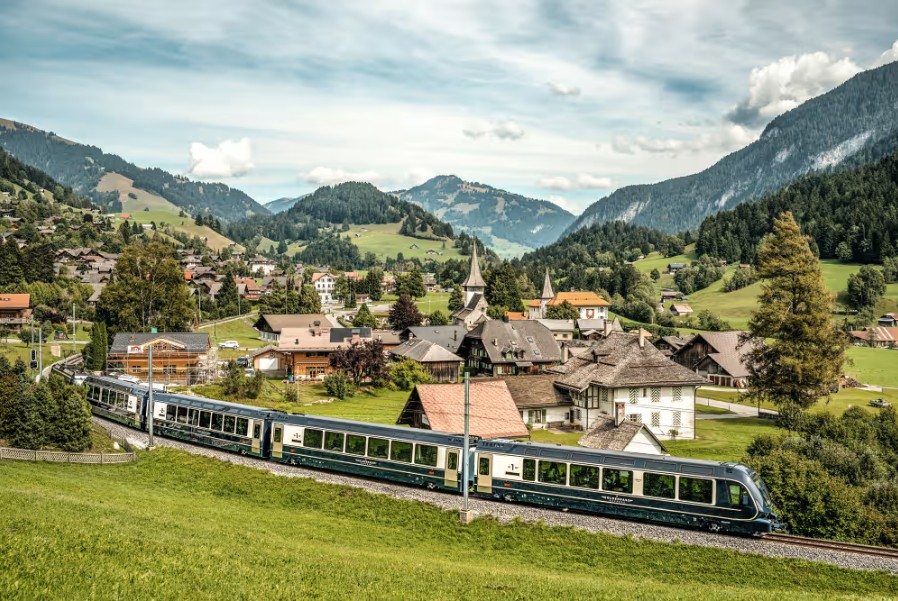
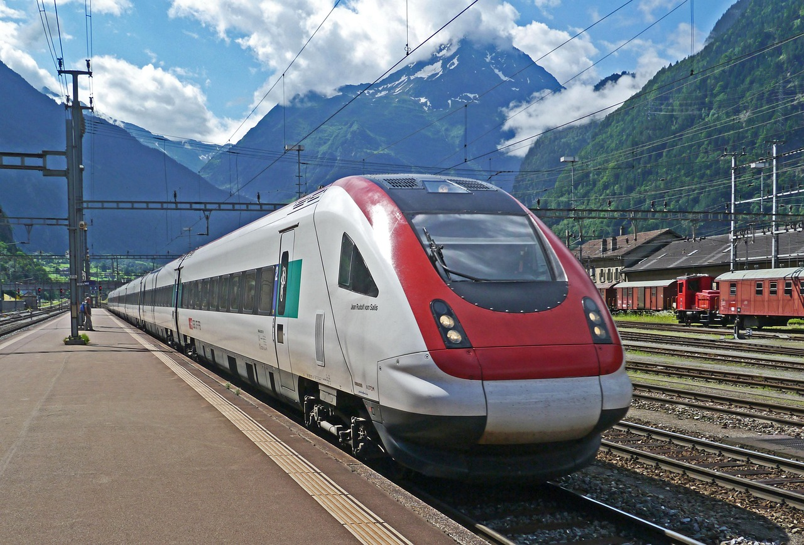

Glacier Express
Uno de los trenes panorámicos más famosos del mundo.
- ⭐ Destacado: cruza 291 puentes
- ⏱ Duración del viaje: 8 horas
- 🚆 Actividad: viaje panorámico alpino
Viajes inolvidables a través de los paisajes alpinos

Uno de los trenes panorámicos más famosos del mundo.

Ruta espectacular entre Suiza e Italia.

Ruta panorámica entre Lucerna y Montreux.

Combina viaje en tren y barco panorámico.